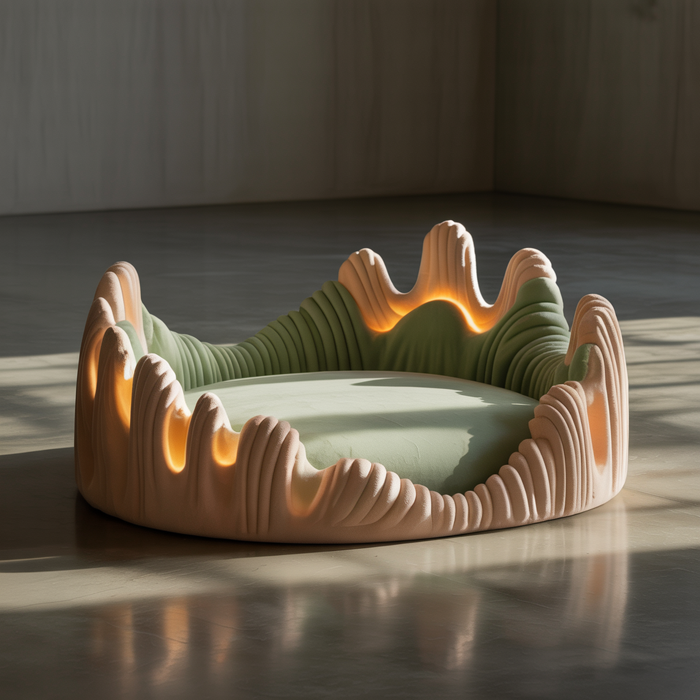
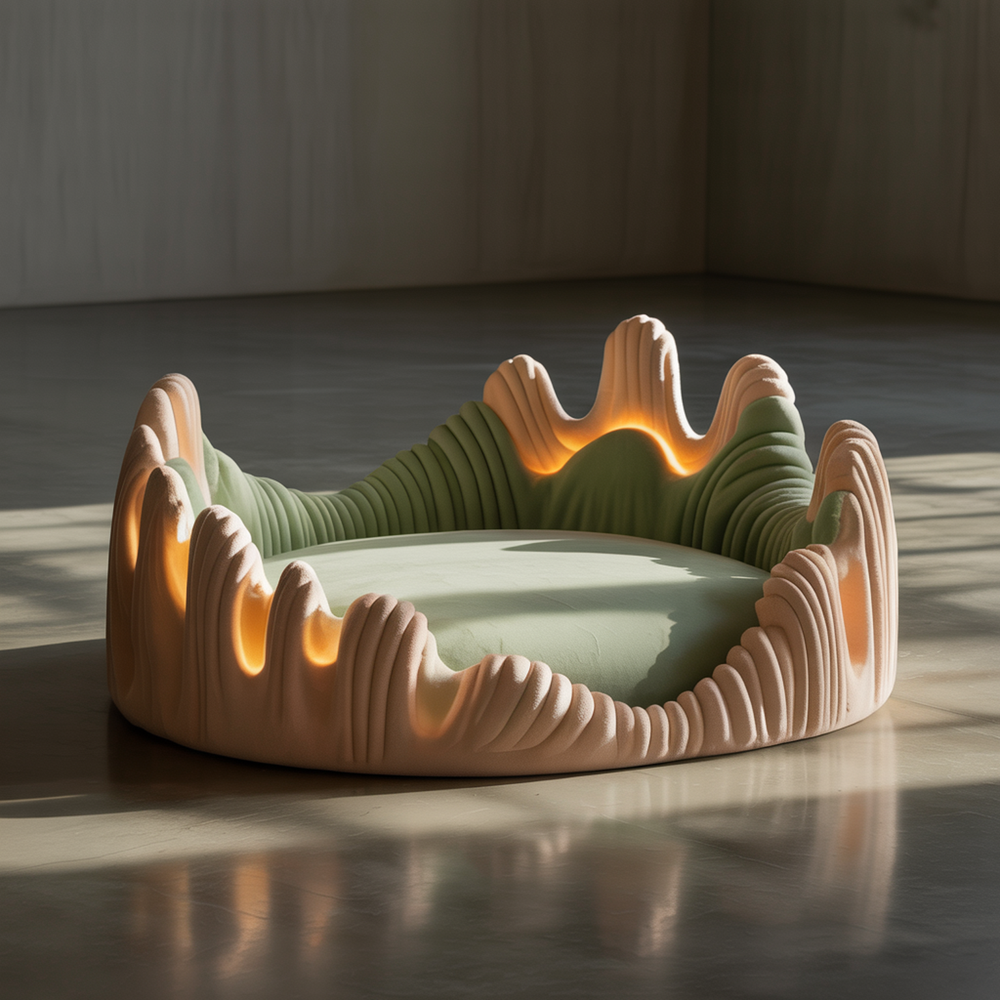
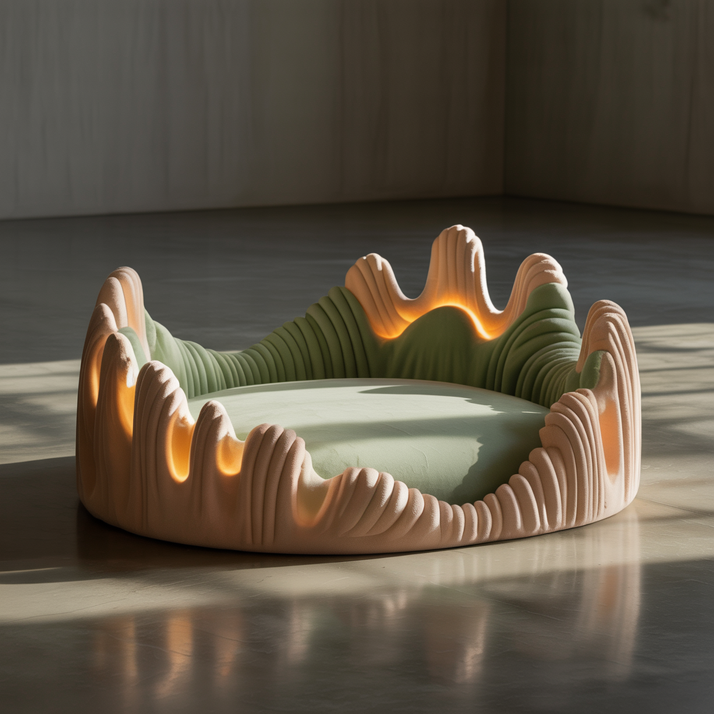

Pets have rich natural instincts, such as play, scenting, hunting, exploring. But indoor spaces rarely support them. At the same time, many people love pets but hesitate to adopt due to concerns about cleanliness, responsibility, or lifestyle constraints. This project explores how a modular swarm-robotic system can create a responsive, low-maintenance environment that supports feline wellbeing while reducing the burdens that often prevent people from owning pets.
The pet-tech market continues to grow. A major underserved segment includes individuals who love pets but avoid adoption due to concerns about cleaning, feeding routines, odor control, and long-term commitment. Current products focus on automation but remain single function.
Our project explores a new generation of responsive and adaptive pet systems—products that can sense, react, and self-adjust to environmental and pet behavioral changes in a more natural way. This emerging direction shifts from simple control-based systems to intelligent, bio-inspired, and empathetic experiences.
Most current devices require user control or app-based input. There is an opportunity for self-reactive systems that function independently and intuitively.
Existing Solutions focuses on repeating routines. A next-generation pet system could recognize environmental cues like temperature and humidity, adjusting solutions accordingly.
Current smart pet products emphasize data metrics, which often remain abstract to users. A responsive design instead uses tangible cues—color changes or surface texture to make the pet’s needs visible.
The smart pet market has optimized convenience but overlooked emotion. Designing systems that respond to pets’ states can foster empathy, strengthening the bond between pets and owners.
How might we create smart and responsive pet products that intuitively adapt to pets’ needs, creating more natural and meaningful interactions?
Gandhi and Thompson's foundational work introduces smart materials that respond dynamically to environmental stimuli.
Read MoreExamines integration of material info into design, inspired by biological paradigms to create adaptive architectural forms.
Read MoreExplores AI as a collaborative partner in design, enhancing creativity and supporting spontaneous insight generation.
Read MoreDelves into design solutions inspired by nature’s time-tested strategies for sustainable and efficient innovations.
Read MorePresents new materialist perspectives challenging traditional views of matter and agency in social and political contexts.
Read MoreApplies Norman’s emotional design theory to a smart cat feeder, integrating aesthetics, remote interaction, and a fish tank.
Read MoreAn AI smart collar tracking pets’ vitals, activity, and emotions, providing alerts, GPS, nutrition guidance, and a community platform.
Read MoreSurvey of modern pet-care technologies including smart collars, feeders, cameras, telemedicine, and robotic toys.
Read More

Principle: Detects body temperature and heart-rate changes; the collar color shifts when the pet is excited, anxious, or relaxed.
Meaning: Visualizes the pet’s emotional state, helping owners better understand their pet’s wellbeing.
Purpose: Placed near a pet’s water or food bowl to indicate when water is empty or food becomes damp.
Principle: Uses a hygroscopic swelling material that changes shape or color as humidity varies, triggering a signal to remind the owner to refill or replace.
Logic: The material slightly bends when the pet enters, automatically conforming to the body’s shape.
Function: The bed gently adjusts its form to accommodate the pet’s different resting positions.
Function: When a pet’s paw or skin becomes abnormally wet, hot, or slippery, the mat reacts and records the condition.
Helps owners identify potential health risks such as skin irritation or environmental discomfort.
Shark-skin microstructures with antibacterial and anti-slip features for hygiene and comfort.
Lotus-leaf-inspired hydrophobic coating reduces residue and promotes healthier eating.
The Sensory Terrarium is a modular, multi-sensory habitat designed to help domestic cats regain their natural “territorial complexity.” By recreating the sensory variety found in the wild to the home, this system allows indoor cats to express natural instincts, reducing stress and boredom while boosting happiness through play, curiosity, and exploration.
Each module serves a unique role:
Digital Companion App
Together, the physical modules and the digital interface create a responsive, data-informed ecosystem. It's a system that promotes natural behavior, emotional balance, and ultimately, a happier and healthier indoor life for cats.
In the normal scenario, the swarm robots act as playful, adaptive companions for the cat.
The modules self-assemble, rotate or move into ramps, tunnels, and moving targets that respond to the cat’s
curiosity.
Beyond play, built-in sensors and lightweight AI analysis monitor the cat’s posture, facial
cues, and activity levels to detect cats' mood changes. The system then gives the owner AI-driven
detection results and useful suggestions for cats' well-being.

In the failure storyboard, the same system is pushed too far: malfunctioning modules move unpredictably and get too close, gradually cornering the cat and causing fear and stress. This highlights the ethical and safety risks when swarm behaviour is not properly limited, monitored, or shut down in time.

Beyond play, the swarm can switch into a cleaning mode once the cat leaves the play area. The modules coordinate to sweep up fur and dust, reach under furniture, and then return to the dock with a cleaner, brighter floor for the cat to rest on. The system becomes not just a toy, but an everyday helper that cares for both the pet and the home environment.